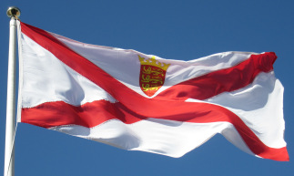

Y'a un tas d'bouonnes choses en Jèrri. Preunmiéthement, j'avons nos fanmeuses vaques dé Jèrri tchi nos donnent lus supèrbe lait, tch'est bein connu dans quâsi touos les pays du monde. Pis, y'a nos patates Rouoyales, et même si les clios sont ach'teu couvèrts dé pliastique au R'nouvé, ch'est lé goût traditionnel dé Jèrri!
Un tas d'touristes veinnent vîsiter nos grèves, not' campangne, nos châtchieaux, et nos p'tits c'mîns auve lus bouais, pliantes et flieurs.
Ach'teu, y'a un tas d'bouôns restaurants et aubèrges, mais au temps pâssé nou griyait les vielles èrchettes dans la tchuîsinne - coumme des mèrvelles et des bourdélots. Mais la pus fanmeuse d'nos èrchettes est l'nièr beurre qu'nou fait au S'tembre auve du cidre, des pommes et d's êpices. Ch'est supèrbe sus du pain Jèrriais (tchuit sus eune fielle dé chour)!
Not' système dé gouvèrnément est unnique. L's Êtats d'Jèrri sont iun des pus vièrs parlements du Commonwealth. Les douze Pâraîsses sont adminnistrées par les Connêtabl'yes, auve lus Chent'nièrs, et l's aut's membres d'la Police Honorifique. Ch'est est bein apprêcié par les contribuabl'yes viyant qu'les officièrs travâlent sans êt' payis - et les Jèrriais veulent tréjous garder lus sou!
Ch'est p't-êt' pouortchi qu'la finnance est si împortante ach'teu pouor l'êconomie d'Jèrri - les rues d'la Ville n'sont pus remplyies d'fèrmièrs et d'pêtcheurs, mais d'bantchièrs et dé s'grétaithes. Un tas d'gens travâlent dans les banques et l's offices. Les compiuteurs ont rempliaichi les tchéthues et y'a des motos à la pliaiche des vainnes et des j'vaux. Mais tout chenna gângne des sou pouor not' Île, et don j'pouvons affaûrder un grand hôpita, des bouonnes pensions pouor nos vielles gens et des nouvieaux bâtisses pouor les mousses dans nos êcoles.
Et né v'chîn acouo eune bouonne chose: not' vielle langue Jèrriaise auve sa littéthatuthe, ses ditons, ses histouaithes et légendes. Et ch'est mangnifique qu'ach'teu nos mousses peuvent apprendre lé Jèrriais dans l's êcoles primaithes - et l'monde peut liéthe lé Jèrriais sus l'Ithangnie.
Ah véthe! J'avons un tas d'bouonnes choses en Jèrri!
Viyiz étout: